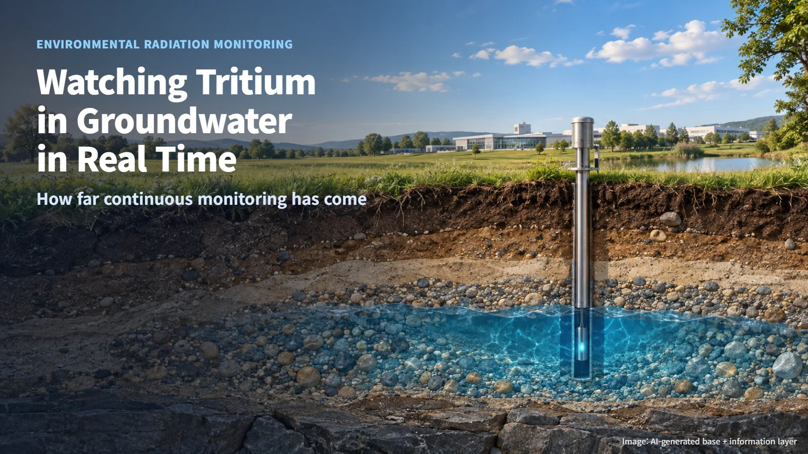
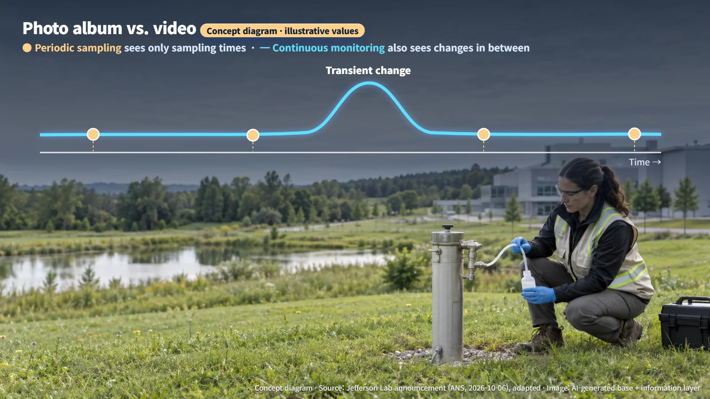
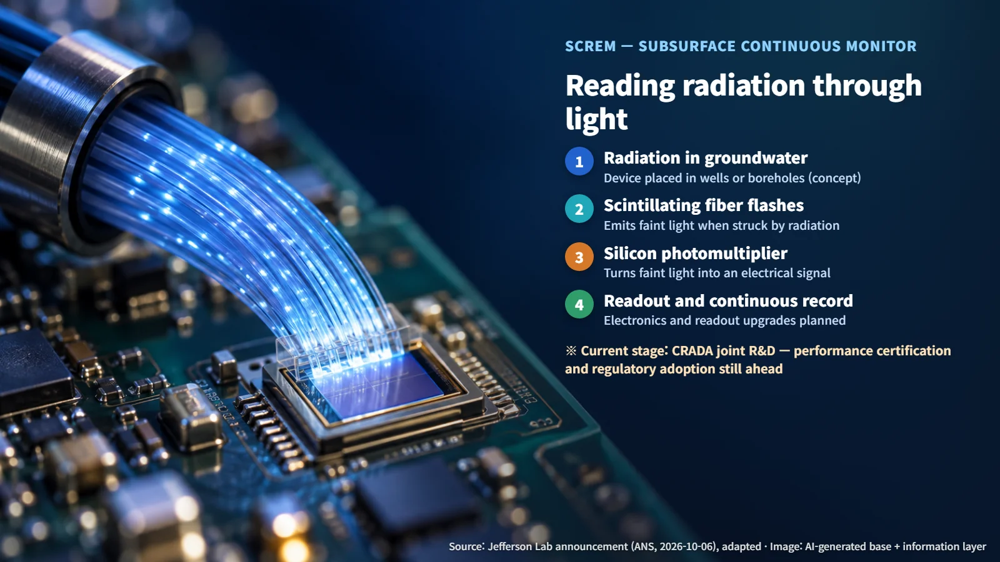

United States · Radiation Monitoring
Watching Tritium in Groundwater in "Real Time"
A new research agreement aims to turn periodic groundwater sampling for tritium into continuous, in-well monitoring, with performance testing still to come.
"There is tritium in the groundwater around nuclear facilities. Who checks it, and how?" Many people share that question. Tritium cannot be seen or smelled, so it is natural to want to know that someone is keeping a careful watch. A timely announcement from the United States addresses exactly this: a plan to commercialize technology that monitors tritium in groundwater continuously. Let's look at what the technology is and how far along it is today.
First, a quick word on tritium itself. Tritium is a radioactive isotope of hydrogen. Chemically it behaves almost exactly like ordinary hydrogen, so it slips easily into water molecules, and it emits very weak beta radiation (radiation in the form of electrons). Because it travels with water as part of the water itself and its radiation is so weak, tritium is regarded as one of the harder substances to measure.

Why "Continuous" Monitoring Matters
Until now, groundwater monitoring has relied mainly on periodic sampling. At set intervals, water is drawn from a monitoring well (a well drilled specifically to observe groundwater) and taken to a laboratory for analysis. The method is precise, yet it leaves a gap: what happens between one measurement and the next stays unseen.
Think of recording a river by taking one photo a day. If a brief surge of muddy water passes through between two photos, the photo album shows no trace of it. That gap is precisely what the newly announced technology targets. According to the announcement, its purpose is to observe changes over time and transient contaminant movement that conventional periodic sampling can miss.
In short, it is an attempt to turn a photo album into a video. A video keeps recording between the snapshots, so a short-lived change leaves a visible trace in the record.

Reading Radiation Through Light
On October 5, Jefferson Lab in the United States announced that it had signed a Cooperative Research and Development Agreement (CRADA) with a company called Canary Instruments to commercialize a groundwater radiation monitoring technology. The American Nuclear Society (ANS) covered the news the next day, October 6. The device is called SCREM, a subsurface continuous radioisotope environmental monitoring device.
The concept is to install the device in monitoring wells or boreholes (narrow holes drilled to investigate the subsurface). It has two key components. The first is scintillating fiber. A scintillator is a material that gives off a very brief flash of light when struck by radiation, and here it is drawn into thin fibers. The second is a silicon photomultiplier, a semiconductor sensor that detects extremely faint light and amplifies it into an electrical signal.
Put together, the sequence works like this. When radiation from the groundwater reaches the scintillating fiber, the fiber flashes, and the silicon photomultiplier reads that tiny flash and turns it into a signal. Picture a slender fiber deep inside a well, blinking a tiny light every time it meets radiation, while a sensor counts each flash one by one.

Why Fusion Facilities Are the First Market Under Review
According to the announcement, the company and the laboratory plan to improve the electronics and signal readout, and to carry out fundamental testing and prototype development. They also said they will initially examine monitoring needs at fusion facilities.
The announcement leaves the detailed reasoning for starting with fusion facilities, rather than nuclear power plants, unexplained. The general background is easy to sketch, though. Fusion research widely discusses fuel made of deuterium and tritium, two isotopes of hydrogen. For a facility that handles tritium directly, keeping a close watch on tritium in the surrounding environment naturally becomes a priority.
The key word here is "examine." The fusion market is the first one the partners will evaluate, and any decision to deploy the device at a fusion facility would come later.
From Research Agreement to Proven Instrument
News like this can easily sound as if real-time monitoring of groundwater tritium has already arrived. The current stage sits much earlier on that path.
A CRADA is an agreement under which a laboratory and an outside organization carry out research and development together. Its role is joint development; a product purchase contract and approval for use at nuclear plants are separate steps. Commercial performance certification of the instrument and adoption by regulators are also steps still ahead.
Whether continuous monitoring proves its value will depend on the data still to come. Several questions need answers: how low a concentration the device can detect (its detection limit), how groundwater chemistry affects the measurement, whether it operates stably underground over long periods, and whether there is enough field calibration data to correct its readings on site. Side-by-side comparison with conventional sample analysis results will also be needed. The milestones to watch next are therefore the results of the fundamental testing and prototype development, followed by data from actual field installations.
Once a prototype has moved from the lab bench into a real monitoring well and held up there for months and years, the technology can earn the description "part of the monitoring system."
---
The less visible a substance is, the more trust begins with how closely it is watched. This announcement is a first step toward watching more closely, and seeing it as that first step is what gives the news its accurate meaning.